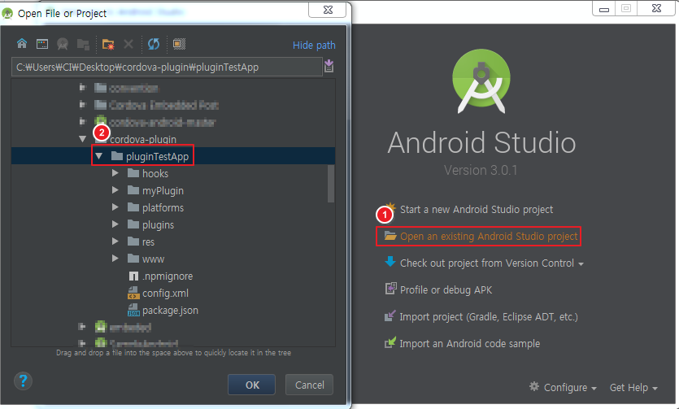
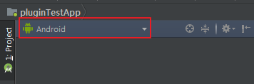
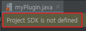
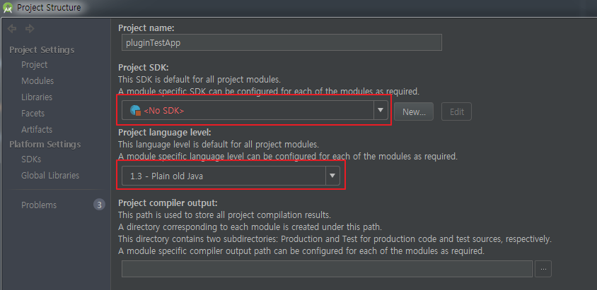
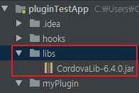
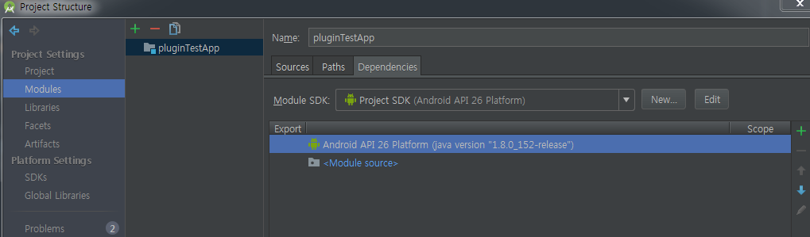
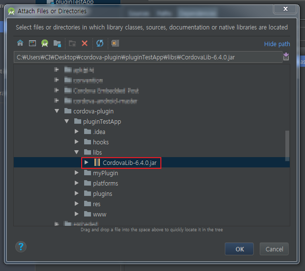
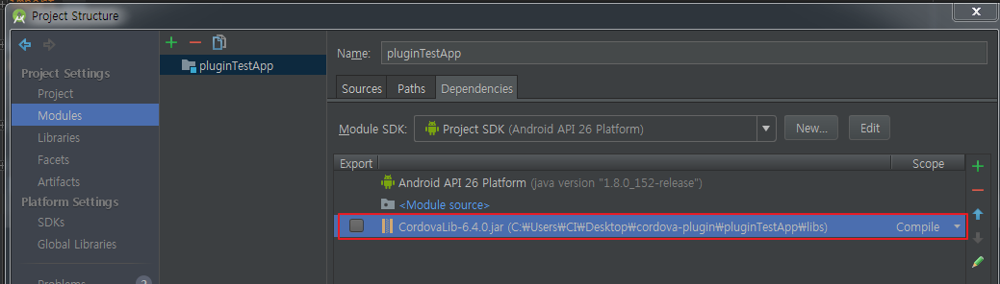
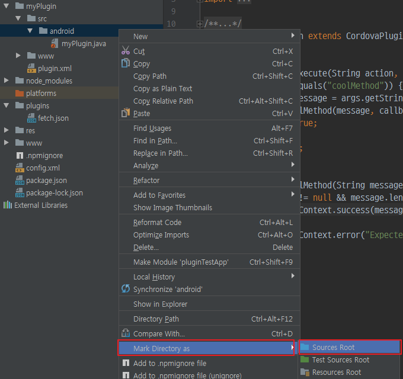
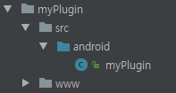

Cordova Plugin 만들기 #1
본 post에서는 Cordova Plugin 작성에 필요한 사전 준비 작업에 대해 설명합니다
Cordova Plugin 개발시의 필요사항
Cordova plugin 개발을 위해서는 Cordova에서 제공하는 Plugman 모듈이 필요하다.1
$ npm install -g plugman # 현재 plugman의 버전은 2.0.0이다.
Cordova plugin 테스트는 실제 Cordova Project 내에서 테스트를 해야 하므로, Cordova Project를 만들 수 있는 모듈도 필요로 한다.(Ionic or Cordova)
본 포스트 내에서는 Android Platform에서 사용하는 Native Plugin을 작성한다.
따라서 Android Platform을 설치하기 위한 Android SDK가 필요하다.
최소한의 개발 요건은 위와 같으며, 모든 설치가 완료되었다는 전제하에 진행한다.
Cordova Plugin 개발환경 세팅
Cordova Plugin 개발 및 디버깅, IDE의 도움 등을 받기 위해서 Android Studio 내에서 작업을 한다.
Cordova Project 생성
우선, 만들 Plugin을 설치하고 테스트할 Cordova Project를 생성한다
본 포스트에서는 Cordova Project를 사용한다
Cordova를 사용해 만들지 않고 Ionic을 사용해 만들어도 무방하다
1 | $ cordova create pluginTestApp com.test.plugin PTA |
Ionic 사용시 위의 아래의 명령어로 project를 만든다.1
$ ionic start pluginTestApp blank
프로젝트가 성공적으로 만들어졌으면 해당 디렉토리로 이동한다
1 | $ cd pluginTestApp |
Plugman을 사용한 Cordova Plugin template 생성
Cordova Project에서 plugman을 사용해 기본 plugin template을 생성한다.
1 | $ plugman create --name myPlugin --plugin_id com.test.myplugin --plugin_version "0.0.1" |
위 명령어 실행 후 프로젝트에 myPlugin으로 새로운 디렉토리가 생긴것을 확인 할 수 있다.
계속해서 생성된 플러그인 디렉토리 내에서 작업한다1
$ cd myPlugin
이후 아래의 명령어를 사용해 실제 Android Native용 Plugin template을 만든다.1
$ plugman platform add --platform_name android
위의 명령어가 성공적으로 수행하면 ~~/myPlugin/src 디렉토리 아래에 android/myPlugin.java 파일이 만들어진다
Android Studio에서의 개발환경 설정
Cordova 프로젝트 열기
Plugin Template까지 제대로 작성이 됐다면, 플러그인을 작성할 일차적인 준비가 완료된 상태이다.
이후 Cordova Project를 Android Studio로 열어 개발 환경을 구성한다.

프로젝트가 정상적으로 열렸다면 좌측 Project View의 Android탭을 Project로 변경해준다.

이후 프로젝트의 구조가 정상적으로 보인다.
플러그인을 작성하기 위해 myPlugin/src/android/myPlugin.java를 열어보면 Project SDK is not defined라는 문구를 확인 할 수 있다.

Java SDK, Android SDK 적용
메뉴의 File -> Project Structure를 선택해 프로젝트 구조 관리 창을 열고 Project Settings의 Project 탭을 선택한다

Project SDK에는 Android SDK를Project Language level에는 Java Version에 맞춰 설정해준다.

이후 다시 myPlugin.java 파일을 열면 SDK 설정에 대한 문구는 나오지 않는다.
CordovaLib 적용
챕터 진행 전 CordovaLib-6.4.0.jar 파일을 다운로드 받는다
프로젝트 루트 디렉토리에 libs로 디렉토리를 하나 만든다.
그리고 다운로드 받은 CordovaLib-6.4.0.jar 파일을 디렉토리 안에 넣는다

이후 다시 메뉴의 File -> Project Structure를 선택해 프로젝트 구조 관리 창을 열고 Modules 탭을 선택한다.

이후 우측의 녹색 십자 버튼을 누르고, 1 JARs or directories...를 누르고 libs 디렉토리에 넣은 CordovaLib-6.4.0.jar를 찾아 선택한다.


정상적으로 파일이 등록되었으면 OK를 눌러 창을 닫는다.
이후 myPlugin/src/android/ 를 오른쪽 클릭해 Mark Directory as -> Sources Root를 선택한다

Sources Root로 잡히게 되면 IDE가 인식해, 파일의 아이콘이 바뀌며 Java 코딩이 가능해진다

위의 과정을 끝으로 Android Studio에서 Cordova Plugin 개발에 대한 기본적인 환경설정이 모두 끝났다.
각 파일에 대한 디테일한 설명은 다음 포스트에서 계속 진행하도록 한다.
- 글쓴이: Henotia
- 발행 일자: 2018-01-25 11:32:05
- 업데이트 일자: 2018-01-31 11:09:30
- 카테고리: Ionic
- License:
 저작자표시-비영리-동일조건변경허락 (CC BY-NC-SA 4.0）
저작자표시-비영리-동일조건변경허락 (CC BY-NC-SA 4.0）